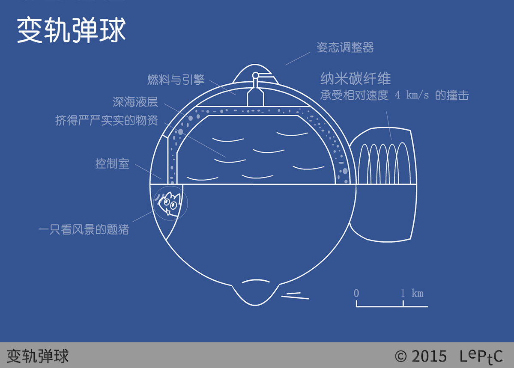

<div class="content">
	<a title="变轨弹球"></a>
	<p>变轨弹球（collision powered transport ball），一种以弹性碰撞为动力的物资运输球。</p>
  <p>发明者：<a href="/wiki/moele/">萌狸</a></p>
	<br />
</div>

{% include header.html param="出场作品" %}

<div class="content">
<ol>
	<li><a href="/notsci/s2n1/">s2n1 钻石矿的小行星</a></li>
</ol>
</div>
